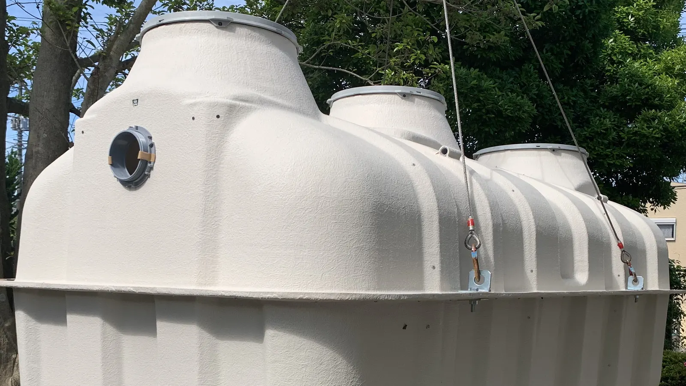

Phase 1 deck, 12 sheets. Every component below is set with the sample model data in src/data/products.json. Portfolio concept. Fictional manufacturer, sample data.
Archivo at 72% for titles, 125% for the wordmark; B612 for notes, data and body copy. base.css
6 to 18 PE. Rotomolded polyethylene tank, upflow anaerobic filtration through bio-media, no power needed.
Body copy runs in B612 at a 70 character measure. Each figure on a sheet is sample data from src/data/products.json; see the sources note for what is sample and what is a real public standard. Press G for the sheet index and F for fullscreen.
Headings carry more space above than below, so each one belongs to the text that follows it.
6–18PE8–30PE40–150PE
.schedule in .schedule-scroll: units row, tabular figures, sticky model column, chosen row in cyan.
| Model | PE | Orientation | DDiameter | LLength | H1Height | H2Water level | Capacity |
|---|---|---|---|---|---|---|---|
| mm | mm | mm | mm | L | |||
| LP-6H | 6 | Horizontal | 1300 | 2550 | 1300 | 1050 | 2930 |
| LP-6V | 6 | Vertical | 1550 | – | 1850 | 1550 | 2920 |
| LP-8 | 8 | Vertical | 1600 | – | 1980 | 1680 | 3380 |
| LP-10 | 10 | Vertical | 1650 | – | 2080 | 1780 | 3810 |
| LP-12 (recommended for 12 PE) | 12 | Vertical | 1700 | – | 2170 | 1870 | 4240 |
| LP-15 | 15 | Vertical | 1800 | – | 2230 | 1930 | 4910 |
| LP-18 | 18 | Vertical | 1850 | – | 2370 | 2070 | 5560 |
Scroll the schedule sideways for every dimension
.range-scale: one linear scale, 0 to 150 PE, shared by every product sheet. The cyan marker follows the selector.
.legend: isolate buttons with balloon numbers and aria-pressed. Here water and flow is isolated.
.approvals reads like a revision table; .keyfacts are drawing-note rows.
| No. | Standard | Sample licence | Series | Since | SPAN ref. |
|---|---|---|---|---|---|
| 1 | MS 2441-1:2012 | SAMPLE-PE-01 | PE Bio-Filter septic tank | Sample | Sample |
| 2 | MS 2441-1:2012 | SAMPLE-FRP-02 | FRP Bio-Filter septic tank | Sample | Sample |
| 3 | MS 2441-2:2014 | SAMPLE-SSTS-03 | LT small sewage treatment system | Sample | Sample |
Scroll sideways for series and SPAN references
.steps, set with the sample installation panels B to F (see sheet 11).
50 mm lean concrete, then a 150 mm grade 30N concrete base with one layer of BRC-A8.
Panel B, item 2Stainless steel anchor hooks in the base.
Panel B, item 3Lower the tank onto the base and secure it with stainless steel turnbuckles.
Panel C, items 4 and 5Fill the tank with water, then backfill around it with sand.
Panel D, items 6 and 7Inlet from the last manhole and outlet to the outlet manhole, both at 1:100.
Panel E, item 8100 mm 1:2:4 concrete slab with one layer of BRC-A9. Extend the brick sump for the manhole cover.
Panel E, items 9 and 10Sand backfilling to ground level and the cover for the manhole.
Panel F, item 11.selector: big-digit PE on a cyan dimension line, site conditions as layer toggles. .result shows the engine's output for 20 PE.
FRP Bio-Filter septic tank, rated 20 PE, vertical
Enquire on WhatsAppLF-20V, 20 PE
Selection guide only. Lintang Tankworks' engineers confirm the model with a PE calculation.
Enter a PE to see the certified model.
Beyond Phase 1 (up to 150 PE): a full sewage treatment plant is needed. Talk to Lintang Tankworks' engineers.
LT needs mains power for its air blowers; confirm power is available on site.
.btn, .btn-primary and .btn-cell, 44 px targets, with disabled, busy and done states.
.viewport-frame: an image attached like an XREF, with clip boundary, corner ticks and a provenance strip.

dialog[data-menu] and dialog[data-share], shown open. The engine fills [data-menu-list] from each slide's data-title; titles here are illustrative.